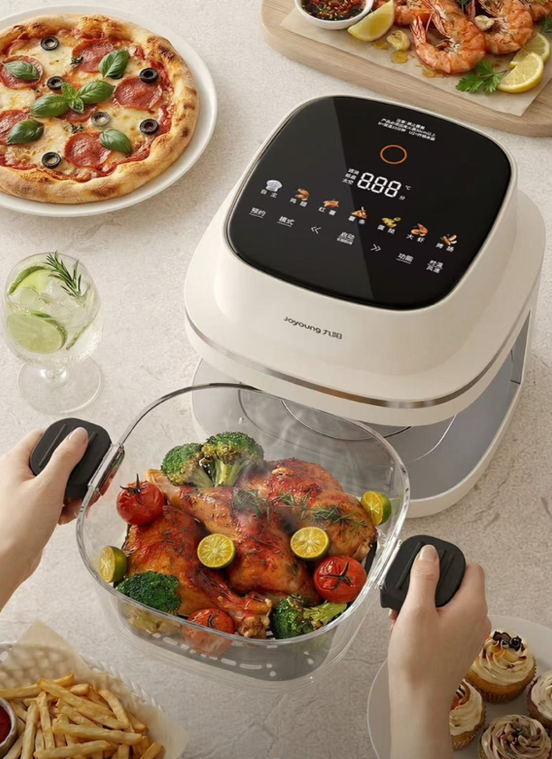

厨房智能硬件 · 用户场景
九阳小厨电瞄准一餐一用：把容量与清理步骤一起做减法
从一杯豆浆到一锅端上桌，产品组合正在围绕具体用餐环节展开。

10月28日，中国家电网的品牌观察报道介绍了九阳面向一人食、晚餐和育儿的多款小家电。其中，小香芋豆浆机以250—350毫升容量对应单次饮用，并提供预约、自清洗和可拆刀头；重点落在做多少、喝多少，以及用完怎么收拾。
同一报道中的太空舱玻璃空气炸锅采用5.8升容器，强调烹饪容器可直接端上桌；EX950喂养台则把消毒、泡奶和摇奶功能集中到一处。相比继续堆叠菜单，这些设计试图缩短从制作到食用、再到清理的步骤。
这些是既有产品的场景化介绍，并非28日统一首发。容量与功能来自该报道；实际清洗难度、摆放面积和使用便利性，仍需结合家庭环境验证。
中国家电网｜九阳场景化小家电报道 · 2026-10-28 11:1710月28日11:17新报道，位于检索窗口；产品首发时间未由该文确认。